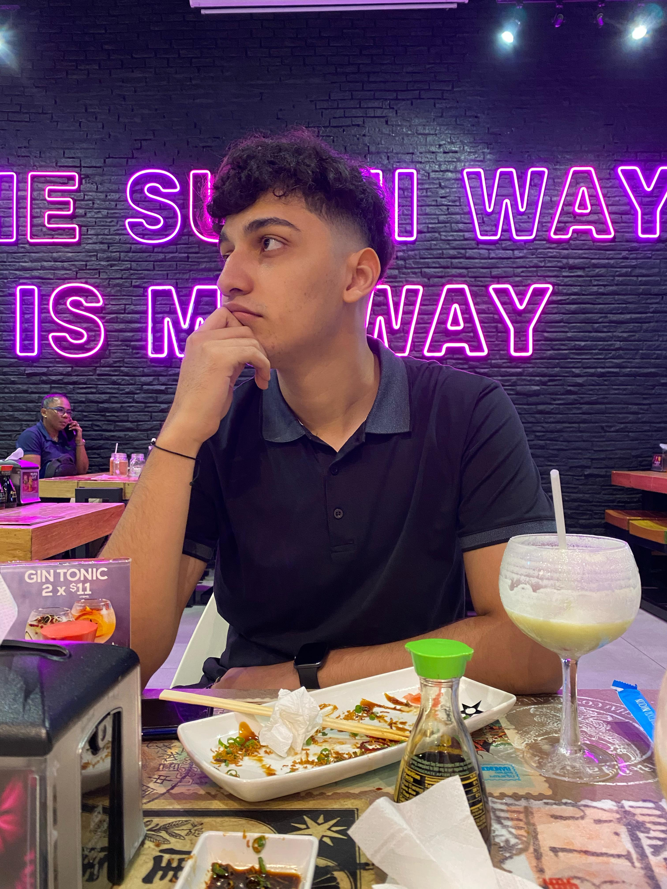

Presentación Personal
Mi nombre es Cristopher Quintero y soy estudiante de Ingeniería en Software. Actualmente me encuentro en proceso de formación académica, donde ya he adquirido conocimientos en frontend (HTML, CSS, JavaScript y React) y me encuentro profundizando en backend con Node.js y Python. También he trabajado en proyectos personales como páginas web para alquiler de espacios de trabajo y aplicaciones con enfoque educativo.
Me considero una persona perseverante y con gran interés en la tecnología. Mis metas están orientadas a convertirme en desarrollador full-stack y poder trabajar de forma remota en proyectos internacionales. Disfruto enfrentar nuevos desafíos, especialmente en áreas como bases de datos, cloud computing (AWS).

Mi sitio web favorito es: Youtube-canal-Elmariana